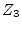
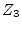

A circulator is a 3-port device, transporting incoming waves lossless from port 1 to port 2, from port 2 to port 3 and from port 3 to port 1. In all other directions, there is no energy flow. The ideal circulator cannot be characterized with Z or Y parameters, because their values are partly infinite. But implementing with S parameters is practical (see equation 9.2).
With the
reference impedances  ,
,  and  for the ports 1, 2 and 3
the scattering matrix of an ideal circulator writes as follows.
and  for the ports 1, 2 and 3
the scattering matrix of an ideal circulator writes as follows.
| (9.97) |
| (9.98) |
| (9.99) |
| (9.100) |
| (9.101) |
| (9.102) |
An ideal circulator is noise free.